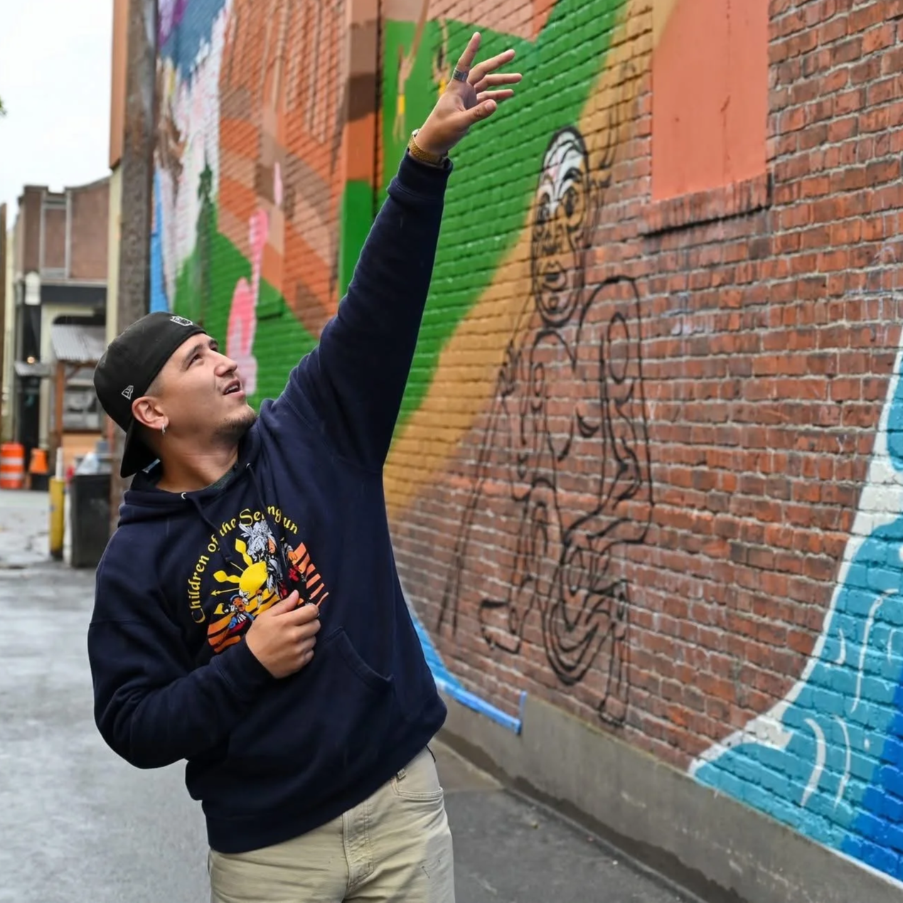
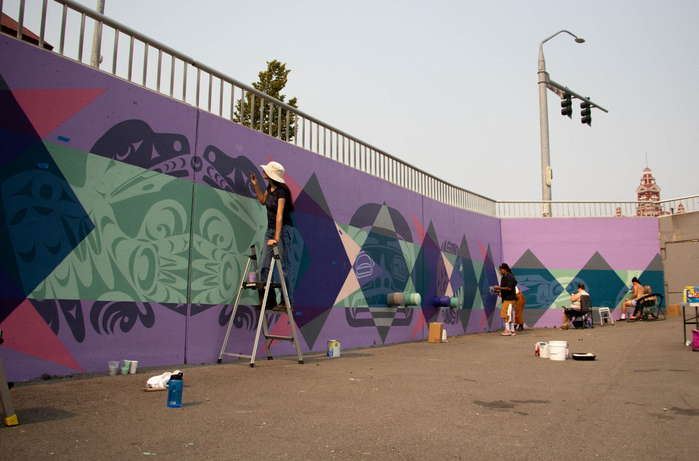
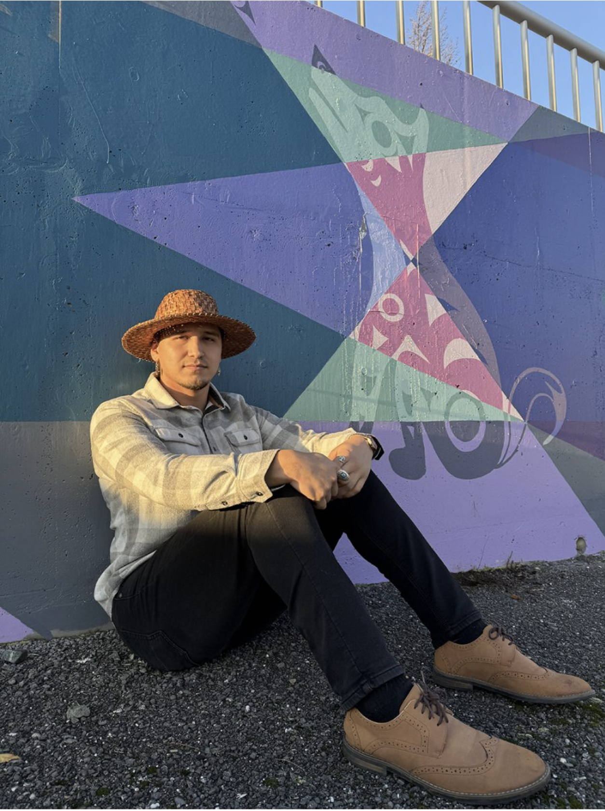

Coast Salish Living Mural
Located in a downtown Bellingham alley near the original Lummi village site Xw'otqwem, this mural honors the stories, presence, and true history of the Coast Salish people on the land where Bellingham now stands. The work features eagle, salmon, and orca alongside traditional ecological technology including reef nets and clam gardens.
At night, a projection mapping layer activates the wall as an interactive storytelling dimension, animating traditional stories across the surface of the mural and extending the work beyond what paint alone can hold.




Indigiversal Collective
Member and Muralist
Collaborating with 10+ Indigenous artists on large scale artworks in the greater Bellingham area.
Indigiversal Collective Artists: Thayne Yazzie, Jason Laclair, Savannah Lecornu, Brian Perry, Kaplan Bunce
Read More